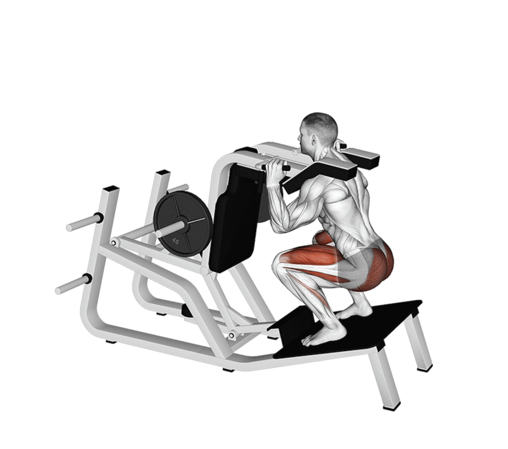

Super Squats
Setup
Use a squat rack and load a barbell with an appropriate weight.
Stand under the barbell with your feet shoulder-width apart and the bar resting across your upper traps.
Grip the bar firmly, unrack it by straightening your legs, and take a step or two back to position yourself.
Engage your core, keep your chest up, and maintain a neutral spine throughout the movement.

Execution
Lower:
Initiate the movement by pushing your hips back and bending your knees, lowering into a deep squat.
Pause:
Go as low as your mobility allows while maintaining proper form and keeping your heels grounded.
Drive Up:
Push through your heels to return to the starting position, keeping your chest proud.
Repeat for high reps (often 20 reps) as part of the Super Squats method.
Tips for Effectiveness
Deep Breaths:
Take 3–5 deep breaths between each rep to recover and push harder.
Spotter Recommended:
Consider having a spotter if going to failure with heavy weights.
Use a Belt:
A lifting belt can help protect your lower back under heavy loads.
Benefits of Super Squats
Massive Leg Gains:
Promotes hypertrophy in quads, glutes, hamstrings, and calves.
Mental Toughness:
Trains mental grit due to the intensity and volume of the set.
Hormonal Response:
Stimulates testosterone and growth hormone release through compound stress.
Do you want to change the language of this page?
English
Malayalam
Tamil
Hindi